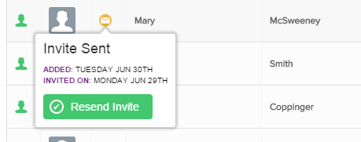
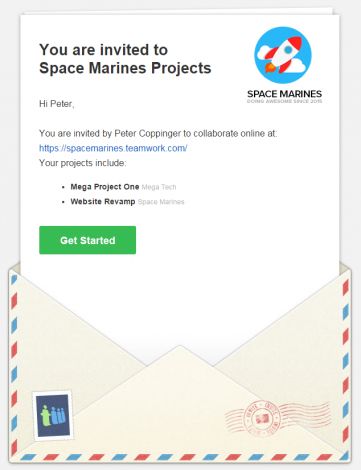
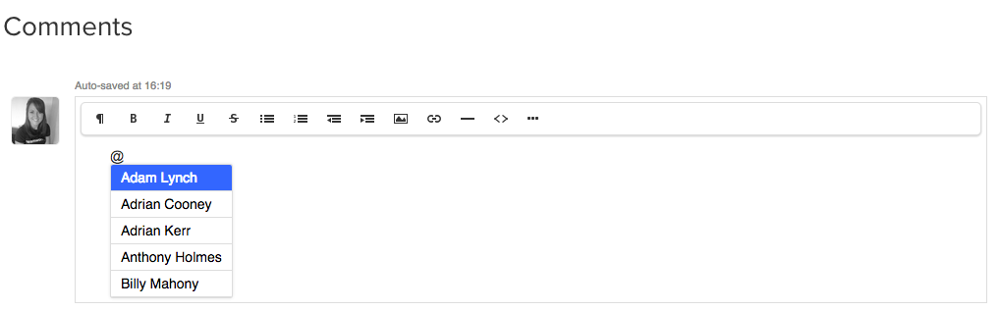
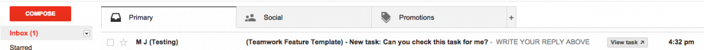

June’s been another insane month for the Teamwork Projects development team! Let’s have a look below to see what’s new with Teamwork Projects this month.
1. Tags on EVERYTHING.
You get tags, you get tags, and you get tags… Everyone gets tags! In May, we announced the release of tags on tasks. It was unbelievably well received, so as a result, this month we rolled out tags on everything from messages to files to notebooks. Tags give you a new way to keep track of your work. Tag or label everything in a way that works best for you. You can also filter your tags so you can see what you have to focus on at any given time.
2. Invite Users
We decided to rehash the “Invite Users” feature. In the past, it was a bit long-winded, so we’ve made it a lot smoother to use with less steps. Previously, it was a bit complicated to tell the difference between a User and a Contact, but now we’ve separated them out. We have given the User greater control, so you can now see when you invited someone and when it was accepted. We’ve also taken password security a little further so now someone else can no longer choose another user’s password, instead you have the option to resend. All-in-all, this gives a much nicer user experience when you’re inviting users to collaborate with you in Teamwork Projects.
{kind=link}
We’ve also updated the invite mail that the invited user receives to hopefully encourage them to log on and get involved in the projects right away.
{kind=link}
3. The Filter Bar
We’ve added an awesome new Filter bar to let you easily search for tags and text, making it easier to find exactly what it is you’re looking for. You can check it out in the video below.
4. @ Mentions
Seems like a small one, but this is a nifty little feature. In recent months, we have found ourselves using the @mention i.e. @DC in our messages to one another. It was simply a habit acquired from using Teamwork Chat Beta, but it was never functional. However, doing so now will notify the person you have mentioned and alert them to the comment.
{kind=link}
5. Gmail Actioning
We’ve made it even easier to access Teamwork Projects from your Gmail account. When someone assigns a task to you in Teamwork Projects and notifies you via your Gmail, there is a new button in the e-mail listing which is an action to go straight to the item. It simply saves your needing to move between tabs.
{kind=link}
That’s all for this month. Any questions, simply drop us a line to support@teamwork.com.